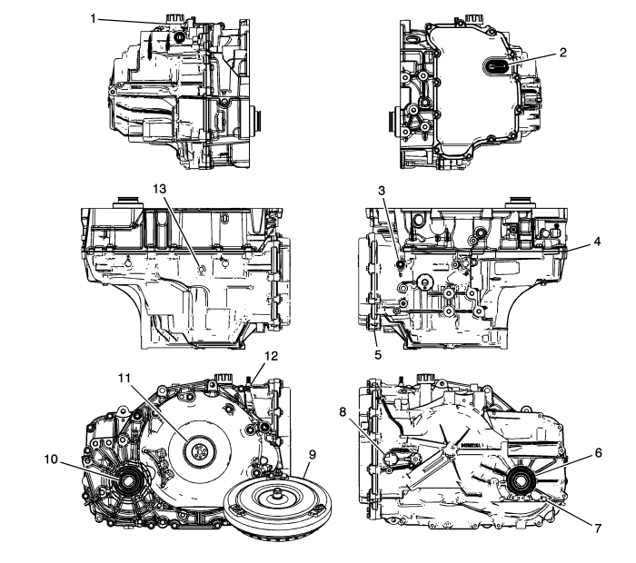

Diagnosis de fugas de líquido
Método general
- Verifique que la fuga es aceite del cambio
Atención: No limpiar mediante un limpiador de frenos o cualquier otro disolvente reactivo ya que éstos pueden dañar los casquillos, sellos y juntas de goma.
- Limpie a fondo la zona de fuga de la que se sospecha con un trapo.
Nota: No marche al ralentí, ya que de este modo no se accionarán los sistemas del cambio, ni conducta el vehículo por la autopista, ya que se salpicará aceite impidiendo el diagnóstico de fugas.
- Haga funcionar el vehículo durante 15-20 minutos en condiciones de conducción por ciudad hasta que se alcance la temperatura normal de funcionamiento.
- Aparque el vehículo sobre un papel o un cartón limpio.
- Apague el motor.
- Busque manchas de aceite en el papel.
- Haga las reparaciones necesarias.
Método de polvo
Atención: No limpiar mediante un limpiador de frenos o cualquier otro disolvente reactivo ya que éstos pueden dañar los casquillos, sellos y juntas de goma.
- Limpie a fondo la zona de fuga de la que se sospecha con un trapo.
- Aplique polvo de rastreo de fugas de tipo aerosol al área de fugas sospechosa.
Nota: No marche al ralentí, ya que de este modo no se accionarán los sistemas del cambio, ni conducta el vehículo por la autopista, ya que se salpicará aceite impidiendo el diagnóstico de fugas.
- Haga funcionar el vehículo durante 15-20 minutos en condiciones de conducción por ciudad hasta que se alcance la temperatura normal de funcionamiento.
- Apague el motor.
- Revise la zona de fuga de la que se sospecha.
- Siga el recorrido de la fuga a través del polvo para encontrar la fuente de la fuga.
- Haga las reparaciones necesarias.
Método de colorante y luz negra
Diversos fabricantes proporcionan un juego de colorante líquido y luz negra.
- Siga las instrucciones del fabricante para determinar la cantidad de colorante a usar.
- Haga funcionar el vehículo 24 km (15 millas) o hasta que se alcance la temperatura normal de funcionamiento.
- Detecte la fuga con la luz negra.
- Haga las reparaciones necesarias.
Encuentre la causa o la fuga.
Localice la fuga y rastréela hasta la fuente. Deberá determinar la causa de la fuga para reparar correctamente la fuga. Por ejemplo, si sustituye una junta, pero la brida de sellado está torcida, una nueva junta no reparará la fuga. También deberá reparar la brida torcida. Antes de intentar reparar una fuga, compruebe lo siguiente y haga las reparaciones necesarias:
Juntas
| • | Nivel/presión de líquido es demasiado alto |
| • | Orificios de vaciado o ventilación obstruidos |
| • | Tensores apretados incorrectamente |
| • | Roscas sucias o deterioradas |
| • | Bridas o superficie de sellado deformadas |
| • | Rayajos, abolladuras u otros daños en la superficie de sellado |
| • | Junta deteriorada o desgastada |
| • | Grietas o porosidad del componente |
| • | Sellador incorrecto usado, si es aplicable |
Juntas
| • | Nivel/presión de líquido es demasiado alto |
| • | Orificios de vaciado o ventilación obstruidos |
| • | Orificio de la junta dañado |
| • | Junta deteriorada o desgastada |
| • | Grietas en el componente |
| • | Superficie del eje manual o eje de salida está rayado, agrietado o deteriorado |
| • | Cojinete suelto o desgastado que provoca excesivo desgaste de la junta |
Puntos posibles de fugas de líquido
Tapa del cuerpo de la válvula de cambio
| • | Tornillos apretados incorrectamente |
| • | Junta/junta de estanqueidad montada incorrectamente o deteriorada |
| • | Lado de soporte deteriorado |
| • | Junta de estanqueidad incorrecta |
Fuga caso
| • | Junta del sensor de revoluciones de entrada dañada |
| • | Junta del eje manual dañada |
| • | Tuberías/juntas del radiador de aceite sueltas o deterioradas |
| • | Retén del semieje deteriorado o desgastado |
| • | Tapón de tubería de presión o tapón de tubería de nivel de líquido suelto |
| • | Carcasa del convertidor de par deformada |
| • | Junta de la carcasa del convertidor a la caja dañada |
Fuga en el extremo del convertidor de par
| • | Fuga del convertidor en la zona de soldadura |
| • | Recorte del reborde de la junta del convertidor Compruebe si hay daños en el cubo de convertidor |
| • | Casquillo de la junta del convertidor hacia delante y dañado |
| • | El muelle toroidal de la junta del convertidor falta de la junta |
| • | Fundido poroso de la carcasa del convertidor de par |
Fuga en la ventilación
| • | Sistema excesivamente lleno |
| • | Agua o líquido refrigerante en el aceite; el fluido aparecerá lechoso |
| • | Carcasa de la caja de cambios porosa |
| • | El indicador de nivel del aceite no es correcto, lo que provoca un sistema excesivamente lleno |
Puntos de inspección de fugas

|
|---|
| (1) | Junta del tapón de llenado |
| (2) | Junta del hueco de la cubierta del cuerpo de la válvula de control |
| (3) | Tapón roscado de presión de la tubería |
| (4) | Carcasa del convertidor a la articulación de la caja |
| (5) | Junta de la tapa del cuerpo de la válvula de control |
| (6) | Conjunto de la junta de aceite del eje impulsor |
| (7) | Tapón de nivel de aceite |
| (8) | Junta tórica del conjunto del sensor de velocidad de entrada de la transmisión A |
| (9) | Conjunto del convertidor de par |
| (10) | Conjunto de la junta de aceite del eje impulsor de la rueda delantera |
| (11) | Conjunto de la junta del líquido del convertidor de par |
| (12) | Junta del eje del cambio manual |
| (13) | Tapón de drenaje |
| © Copyright Chevrolet. Reservados todos los derechos |